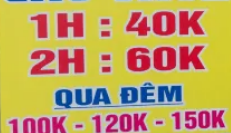

Khi đi làm, giữa muôn vàn công nghệ phức tạp xung quanh, một người làm đủ "cứng" có thể ứng biến dễ dàng:
- muốn tạo 1 máy ảo và cấu hình mạng dùng terraform? copy file .tf đã tồn tại và sửa một chút cho phù hợp yêu cầu.
- muốn deploy 1 service với Salt/Ansible? copy các file yaml/role có sẵn rồi sửa một chút cho phù hợp với yêu cầu.
- muốn deploy 1 service trên Kubernetes? copy file .yaml có sẵn trong "mono repo" của công ty rồi sửa lại chút chút cho phù hợp yêu cầu.
- muốn thêm 1 endpoint cho website Django/flask? copy function đã có trong cùng file và sửa lại một chút cho hợp với yêu cầu.
- muốn thêm 1 alert trên Prometheus/Alertmanager? copy vài dòng trong file yaml cấu hình rồi sửa lại một chút cho phù hợp yêu cầu. ...
Mất bao lâu để "làm chủ", "master" các công nghệ bôi đậm nói trên? Không hề ít thời gian và công sức! Vậy làm sao mọi lập trình viên/devops ngày nay đều yêu cầu phải biết cơ bản những thứ này? làm sao họ làm được? đi đường tắt: copy/paste.
Copy/paste trap
Khác với các sinh viên, có cả năm để học 1 môn, hay các "junior" có cả tháng tìm hiểu và "học việc", thì những người làm lâu năm được kỳ vọng nắm được những thứ trên trong vài ngày/tuần, và khi copy/paste + 1 chút search có thể hoàn thành công việc rồi lại chuyển qua thứ khác, khiến họ dễ mắc phải bẫy "YAML/TF engineer" - hiểu nôm na và biết copy/paste.
Local knowledge
Nếu làm công ty nhỏ, 1 người có thời gian xây dựng cả hệ thống từ đầu, làm những công việc như:
- tạo 1 project từ đầu "manage.py startproject"
- setup CI/CD, config GitLab/Jenkins, etc...
- cài đặt terraform + terraform enterprise/S3 state management
- tạo cloud Virtual Network/VPC, chia subnet, config route...
- setup Kubernetes cluster, config ServiceAccount/Role, ...
- ...
Thì ở các công ty lớn, mỗi người chỉ nắm 1 phần nhỏ, với các hệ thống đã dựng sẵn, và nếu không có kinh nghiệm từ trước, thì họ chỉ có kinh nghiệm "từ ấy".
Rocket 2 giờ
Giải pháp để tránh bẫy hiểu biết cục bộ hay "get shit done" này là dành 2 giờ đầu (hay 4, hay nhiều hơn, trong phạm vi có thể) để hiểu từng công nghệ, tự setup theo tutorial của công nghệ ấy. Việc đầu tư chút thời gian này sẽ có giá trị rất cao về sau... đặc biệt là trong các cuộc phỏng vấn.
Chuyện này chẳng có gì mới, bài học kinh điển của những người "tiết kiệm thời gian", không đọc kỹ document, để rồi mất hàng tháng/tuần/ngày để debug về sau.
Kết luận
Giành vài giờ tự setup từ đầu theo tutorial trước khi dùng 1 công nghệ sẽ mang lại lợi ích lớn về sau.
Hết.
HVN at http://pymi.vn and https://www.familug.org.